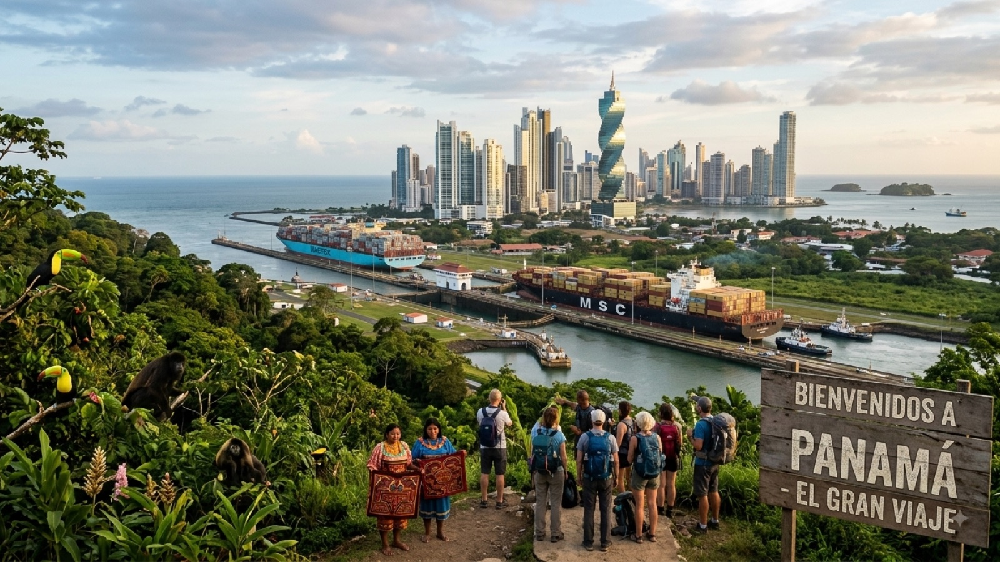

טיול בפנמה 2026 — המדריך המלא

פנמה היא מדינה ברוחב של יום נסיעה, שבתוכה נדחסים שני אוקיינוסים. בבוקר אפשר לשתות קפה מגידולי בוקטה במרפסת בגובה אלף מטר, ובערב לשכב על אי קריבי שכולו שלושה דקלים וצריף אחד. באמצע יושבת בירה עם קו רקיע של מגדלי זכוכית, ולידה תעלה שדרכה עוברים חמישה אחוזים מהסחר העולמי — וכל זה במטבע שאתם כבר מכירים: דולר אמריקאי.
למטיילים ישראלים פנמה היא כמעט תמיד תחנת הסיום של מרכז אמריקה — הנקודה שבה הגל היורד ממקסיקו נעצר, כי מכאן כבר אי אפשר להמשיך ביבשה. זו גם אחת המדינות הכי פחות מובנות ביבשת: רבים מקצים לה ארבעה ימים בדרך לקולומביה ומגלים שהם רוצים שבועיים. המדריך הזה מרכז את כל מה שצריך לדעת לפני שיוצאים.
מתי כדאי לנסוע לפנמה?
פנמה יושבת קרוב לקו המשווה, ולכן הטמפרטורה כמעט לא זזה כל השנה: 28–32 מעלות בשפלה, ולחות גבוהה. מה שכן משתנה זה הגשם.
העונה היבשה (דצמבר–אפריל) היא העונה הנוחה: שמיים בהירים ברוב הימים, ים רגוע יותר לסירות, ודרכי עפר עבירות. זו גם עונת השיא — מחירים גבוהים יותר וצורך להזמין מראש, במיוחד סביב חג המולד, השנה החדשה והקרנבל של פברואר, שבו חצי מהמדינה יוצאת לחופש ומחירי הלינה מזנקים.
עונת הגשמים (מאי–נובמבר) נשמעת גרוע יותר משהיא. הגשם יורד בדרך כלל כמטח קצר ואלים אחר הצהריים, והבוקר נשאר פנוי לפעילות. הכול ירוק, ההוסטלים זולים, ואוקטובר–נובמבר הם החודשים הגשומים ביותר.
הנקודה שמפילה הרבה מטיילים: לצד הקריבי יש לוח זמנים אחר לגמרי. בבוקאס דל טורו ובאזור סן בלאס הגשם מתפזר על פני כל השנה, ולעומת זאת ספטמבר–אוקטובר — שיא עונת הגשמים בשאר המדינה — הם דווקא מהחודשים הבהירים ביותר בקריביים. אם הצד הקריבי הוא הלב של הטיול שלכם, אל תבנו את התכנון רק על "עונה יבשה".
ויזה, כניסה ומעברי גבול
בעלי דרכון ישראלי לא צריכים ויזה מראש, ומקבלים בכניסה אישור שהייה של עד 90 יום. שימו לב: פנמה נהגה להעניק 180 יום, וקיצרה זאת ל-90 ב-2021 עבור רוב המדינות הפטורות — מדריכים ישנים עדיין נוקבים במספר הישן. אם צריך יותר, אפשר להגיש בקשה להארכה במשרדי ההגירה לפני שהתקופה נגמרת. הדרכון צריך להיות בתוקף לחצי שנה, ולפעמים מבקשים להראות כרטיס יציאה מהמדינה ואמצעי תשלום.
נקודה שכדאי לזכור אם הגעתם מצפון: פנמה אינה חלק מהסכם CA-4 (גואטמלה, הונדורס, אל סלבדור וניקרגואה). כלומר יציאה לפנמה מאפסת את מכסת תשעים הימים המשותפת שלהן — פתרון נוח למי שנתקע על גבול המכסה.
הגבול לקוסטה ריקה — שני מעברים עיקריים. פאסו קנואס (Paso Canoas) על הכביש הבין-אמריקאי הוא המרכזי, הצפוף והיעיל, ומתאים למי שנוסע דרך העיר דויד. גואביטו–סיקסאולה (Guabito–Sixaola) בצד הקריבי הוא המעבר הטבעי אם אתם באים מבוקאס דל טורו או נוסעים לפוארטו ויחו. בשניהם יש אגרת יציאה קטנה, ובשניהם עדיף להגיע בבוקר.
ולקולומביה — אי אפשר לנסוע. זו כנראה עובדת התכנון החשובה ביותר בכל המדריך. בין פנמה לקולומביה משתרע מצוק הדרין (Darién Gap): כמאה קילומטרים של ג׳ונגל וביצות שבהם הכביש הבין-אמריקאי פשוט נגמר. אין כביש, אין תחבורה, ואין "מסלול קשה למי שרוצה אתגר" — האזור נשלט בפועל בידי ארגוני פשע וכנופיות הברחה, ומדי שנה נעלמים בו אנשים. אין בו מקום למטיילים. שתי האפשרויות האמיתיות הן:
- טיסה — מפנמה סיטי לקרטחנה, מדיין או בוגוטה. טיסות של פחות משעה וחצי, ובהזמנה מראש הן זולות מאוד. זו הבחירה של רוב המטיילים.
- הפלגה בסירת מפרש דרך סן בלאס — ארבעה עד חמישה ימים מפנמה סיטי לקרטחנה: כשלושה ימי עגינה בין איי סן בלאס עם שנרקול ואיים ריקים, ואחריהם הפלגה רצופה של יממה עד יומיים בים הפתוח. זו אחת החוויות הזכורות של הטיול ביבשת, אך היא יקרה, המקומות נחטפים חודשים מראש, וקטע הים הפתוח קשה למי שסובל ממחלת ים.
כמה עולה טיול בפנמה?
פנמה יקרה מגואטמלה ומניקרגואה, וקרובה יותר לקוסטה ריקה. הסיבה פשוטה: המטבע הרשמי הוא הבלבואה, הצמוד לדולר האמריקאי ביחס 1:1, והשטרות שבשימוש בפועל הם שטרות דולר. אין המרה, אין עמלת מטבע ואין חישובים בראש — רק מחירים שנקובים ישירות במטבע חזק.
| הוצאה | מחיר משוער |
|---|---|
| מיטה בחדר משותף בהוסטל | 15–25$ |
| חדר פרטי בסיסי | 40–70$ |
| ארוחה מקומית (קסאדו / פונדה) | 5–8$ |
| ארוחה במסעדה תיירותית | 12–20$ |
| בירה מקומית (Balboa / Atlas) | 1–2$ |
| נסיעה במטרו של פנמה סיטי | כ-0.5$ |
| אוטובוס פנמה סיטי–דויד (6–8 שעות) | 15–20$ |
| טיסת פנים לבוקאס דל טורו | 100–180$ לכיוון |
| סיור יום לסן בלאס (4x4 + סירה + ארוחה) | 130–180$ |
| מרכז המבקרים במירפלורס | כ-20$ |
| שני צלילות בפארק קויבה מסנטה קטלינה | 150–200$ |
| הפלגה של 5 ימים לקרטחנה דרך סן בלאס | 550–750$ |
שורה תחתונה: מטייל תרמילאי סביר מוציא בפנמה 40–50 דולר ביום כולל לינה, אוכל ותחבורה, בלי אטרקציות גדולות. שבועיים עם סיור סן בלאס, יום צלילה וכמה טיסות פנים יסתכמו בסביבות 900–1,300 דולר לאדם.
איך מתניידים בפנמה?
פנמה קטנה, וזה מרגיש. הכביש הבין-אמריקאי חוצה אותה מקצה לקצה ומחבר את רוב המסלול.
אוטובוסים בין-עירוניים יוצאים מתחנת אלברוק (Albrook) בפנמה סיטי — תחנה ענקית וממוזגת שצמודה לקניון ולמטרו. הקווים הארוכים לדויד הם אוטובוסים מודרניים עם מיזוג אגרסיבי (קחו סווטשרט, זה לא בדיחה), והנסיעה לוקחת שש עד שמונה שעות. בין עיירות נוסעים ב"דיאבלוס רוחוס" ובמיניוואנים מקומיים, זולים וללא לוח זמנים אמיתי.
המטרו של פנמה סיטי הוא הפתעה נעימה: מהיר, נקי, ממוזג ועולה פחות מדולר לנסיעה. הוא מחייב כרטיס מגנטי נטען שקונים בתחנה, ואפשר להעביר אותו בין כמה נוסעים. בעיר עם פקקים אגדיים, הוא לרוב הדרך המהירה ביותר לנוע.
טיסות פנים יוצאות משדה אלברוק הפנימי ולא מטוקומן הבינלאומי, וזה בלבול נפוץ — הפרישו זמן בין השניים. הקו המרכזי הוא לבוקאס דל טורו, וחוסך יום שלם של אוטובוס פלוס סירה. יש גם טיסות קטנות לאיי סן בלאס וללא מעט יעדים כפריים, במטוסים של 15–20 מושבים עם מגבלת כבודה נוקשה.
טרנספרים ב-4x4 הם השיטה לסן בלאס: יציאה מפנמה סיטי לפנות בוקר, כשעתיים וחצי של כביש הררי תלול ומפותל עד לנמל קרטי, ומשם סירה. אין תחבורה ציבורית לשם, ואין טעם לנסות עם רכב שכור רגיל.
המסלול המומלץ — שבועיים בפנמה
המסלול בנוי מפנמה סיטי מערבה, כלומר בכיוון הנכון למי שמסיים בקוסטה ריקה. בכיוון ההפוך הוא עובד בדיוק אותו דבר:
- ימים 1–2 · פנמה סיטי — קסקו ויחו הקולוניאלי עם קו הרקיע המודרני מולו מעבר למפרץ, מרכז המבקרים במנעולי מירפלורס, וטיול ערב על הקינטה קוסטרה. מומלץ להגיע למירפלורס בבוקר או אחה"צ, כשעוברות אוניות.
- ימים 3–4 · איי סן בלאס — שני לילות בבקתה על אי בגודל של מגרש כדורגל: המים הכי טורקיזיים שתראו, בלי חשמל בלילה ובלי קליטה. זה בדיוק היתרון.
- יום 5 · אל ואייה דה אנטון — עיירה קטנה שיושבת בתוך לוע של הר געש כבוי, שעתיים מהבירה. אוויר קריר, מפלים, שביל "האינדיאנית הישנה" ושוק פרחים. הפוגה מצוינת מהחום.
- ימים 6–7 · פלאיה ונאו — חוף גלישה ארוך בחצי האי אסוארו, עם מים חמים, גלים נוחים ללומדים ואווירת כפר קטן שעוד לא נבלע.
- ימים 8–9 · סנטה קטלינה — כפר דייגים מנומנם שהוא בסיס היציאה לפארק הלאומי קויבה: אחד מאתרי הצלילה הטובים באוקיינוס השקט, עם כרישי ריף, צבים ולהקות ענק. גם למי שלא צולל יש שם שנרקול וגלישה רצינית.
- ימים 10–11 · בוקטה — עיירת הרים ירוקה בגובה כ-1,200 מטר, ליד הר הגעש בארו. קפה מהמשובחים בעולם, סיורי חוות, מסלול "שלושת המפלים", ולראשונה בטיול — שמיכה בלילה.
- ימים 12–14 · בוקאס דל טורו — ארכיפלג קריבי של הוסטלים על כלונסאות, מוניות סירה ואופניים חלודים. איסלה קולון לחיי לילה, שנרקול בקיי זפאטייה, וחופים ריקים בצד המזרחי.
יש עוד כמה ימים? פורטובלו על החוף הקריבי מוסיפה מבצרים ספרדיים מהמאה ה-17 וצלילה זולה; איסלה איגואנה ליד פדסי היא טיול יום קצר לחוף לבן ריק; ומי שאוהב הליכה יכול לשריין יום לטרק הזריחה על הר בארו, שממנו רואים בימים בהירים את שני האוקיינוסים בבת אחת.
מה חובה לראות בפנמה?
חמש החוויות שכמעט אף אחד לא מוותר עליהן:
- איי סן בלאס — ארכיפלג של מאות איים קריביים בשליטה עצמאית של עם הגונה (Guna Yala). הביקורים מאורגנים דרך מפעילים מקומיים בבעלות גונה, יש אגרת כניסה קהילתית (בסביבות 20–25 דולר), ולעיתים נגבית גם אגרה נפרדת לאי עצמו. אלה לא "כפרים מבוימים" — זו טריטוריה אוטונומית עם חוקים משלה, כולל איסור צילום של אנשים ללא רשות.
- תעלת פנמה — מנעולי מירפלורס הם הביקור הסטנדרטי: מרפסת תצפית, מוזיאון וסרט, ואוניית ענק שנכנסת לתא ומורמת מול העיניים. פחות אטרקציה תיירותית, יותר שיעור בהנדסה.
- בוקאס דל טורו — האיים הקריביים הנגישים ביותר בפנמה, ומקום שקשה לצאת ממנו בזמן.
- בוקטה והקפה שלה — סיור חווה אמיתי, כולל טעימה של גישה (Geisha), אחד מזני הקפה היקרים בעולם, שגדל בדיוק שם.
- קסקו ויחו — הרובע הקולוניאלי המשוקם של הבירה, עם גגות בר ורחובות מרוצפים, ומעבר למים — יער של מגדלי זכוכית. אין בדרום אמריקה הרבה ניגודים חדים כאלה במרחק הליכה.
בטיחות בפנמה — מה באמת צריך לדעת
פנמה נחשבת מהמדינות הבטוחות במרכז אמריקה, ורוב מסלול התרמילאים עובר בלי תקריות. יחד עם זאת יש כאן כמה קווים אדומים אמיתיים, ושווה להכיר אותם בשמם.
פנמה סיטי היא עיר של ניגודים חדים, ושכונות משתנות ברחוב אחד. אל צ׳ורייו, קורונדו וסן מיגליטו אינם מקומות לשוטט בהם, וגם סנטה אנה — שגובלת ממש בקסקו ויחו — מרגישה אחרת לגמרי אחרי החשכה. קסקו ויחו עצמו מפוקח היטב בלב, אך שוליו פחות; אל תצאו ממנו רגלית בלילה, קחו אובר (זמין וזול) ואל תסתובבו עם טלפון ביד ליד הכביש.
קולון, עיר הנמל בקצה הקריבי של התעלה, היא החריגה הבולטת. שיעורי הפשיעה בה גבוהים משמעותית, ומטיילים נשדדים בה גם באור יום. אין בה סיבה תיירותית לעצור — מי שנוסע לפורטובלו יעבור לידה, לא דרכה, ולא ילון בה.
בים בבוקאס דל טורו מסתתר הסיכון הפחות צפוי. חופי הצד הפתוח — בלאף וויזארד ביץ׳ בעיקר — יפים ומתעתעים: יש בהם זרמי קרע חזקים, שוברי גלים לחוף, ואין מצילים. זו סיבת המוות מספר אחת של מטיילים באזור, ולרוב אחרי אלכוהול. אל תיכנסו לבד, אל תיכנסו שיכורים, ואם נסחפתם — אל תשחו נגד הזרם אלא במקביל לחוף.
מצוק הדרין הוא לא "אזור מסוכן" אלא אזור אסור. אין בו מסלול, אין בו סיוע, ואין בו ביטוח שיכסה אתכם. הפארק הלאומי דרין נגיש חלקית עם מדריך מורשה בקצה המערבי, אבל כל מה שמזרחית לכביש הראשי — פשוט לא.
ולבסוף השגרה: מים מהברז בטוחים לשתייה כמעט בכל פנמה (בוקאס דל טורו היא היוצאת מן הכלל — שם קונים בקבוקים או מסננים), יתושים באזורים הקריביים מצדיקים דוחה עם DEET, והשמש כאן חזקה בהרבה ממה שהעננות מרמזת.
שאלות נפוצות
כמה ימים צריך לפנמה?
שבועיים הם המספר הנוח: הם מספיקים לפנמה סיטי והתעלה, לסן בלאס, לבוקטה ולבוקאס דל טורו בלי לבזבז את כל הזמן באוטובוסים. עם עשרה ימים תצטרכו לבחור בין הצד הקריבי לצד הפסיפי. שלושה שבועות פותחים את פלאיה ונאו, את סנטה קטלינה ואת הצלילה בקויבה, ומשאירים מרווח לימי גשם.
אפשר לעבור ביבשה מפנמה לקולומביה?
לא. בין שתי המדינות משתרע מצוק הדרין — כמאה קילומטרים של ג׳ונגל וביצות בלי כביש, בשליטת ארגוני פשע וכנופיות הברחה. זהו אזור מסוכן ואסור למעבר, ואין בו שום מסלול תרמילאי. שתי הדרכים החוקיות והמעשיות הן טיסה מפנמה סיטי לקרטחנה, למדיין או לבוגוטה, או הפלגה של ארבעה עד חמישה ימים בסירת מפרש דרך איי סן בלאס אל קרטחנה.
באיזה מטבע משלמים בפנמה?
המטבע הרשמי הוא הבלבואה, אך הוא צמוד לדולר האמריקאי ביחס של אחד לאחד, והשטרות שבשימוש בפועל הם שטרות דולר אמריקאיים. מטבעות הבלבואה מסתובבים לצד מטבעות אמריקאיים באותם גדלים. בפועל אין המרות ואין עמלות מטבע, אבל כדאי להחזיק שטרות קטנים: בכפרים, בסירות ובסן בלאס קשה מאוד לפרוט שטר של 50 או 100 דולר.
איך מגיעים לסן בלאס וכמה זה עולה?
הביקורים בסן בלאס מאורגנים דרך מפעילים בבעלות עם הגונה, שמנהל את הטריטוריה באופן אוטונומי. היציאה היא ב-4x4 מפנמה סיטי בסביבות חמש בבוקר, כשעתיים וחצי של כביש הררי תלול עד נמל קרטי, ומשם סירה לאיים. סיור יום עולה בערך 130–180 דולר, ולינה על אי עם ארוחות נעה סביב 100–150 דולר ללילה. לכך מתווספת אגרת כניסה קהילתית של כ-20–25 דולר. הכול במזומן — אין כספומטים ואין אשראי באיים.
האם ישראלים צריכים ויזה לפנמה?
לא. בעלי דרכון ישראלי נכנסים לפנמה ללא ויזה מראש ומקבלים אישור שהייה של עד 90 יום (פנמה קיצרה את התקופה מ-180 ל-90 יום ב-2021 עבור רוב המדינות הפטורות; אמריקאים וקנדים עדיין מקבלים 180). הדרכון צריך להיות בתוקף לחצי שנה קדימה, ולעיתים מבקשים בדלפק להראות כרטיס יציאה מהמדינה וסכום כסף זמין. פנמה אינה חלק מהסכם CA-4, כך שהיא מאפסת את מכסת תשעים הימים של גואטמלה, הונדורס, אל סלבדור וניקרגואה.
פנמה היא סוף הדרך של מרכז אמריקה, לא בגלל שנמאס — אלא בגלל שהיבשת פשוט נגמרת. שווה לעצור בה יותר מיומיים לפני שעולים על המטוס.